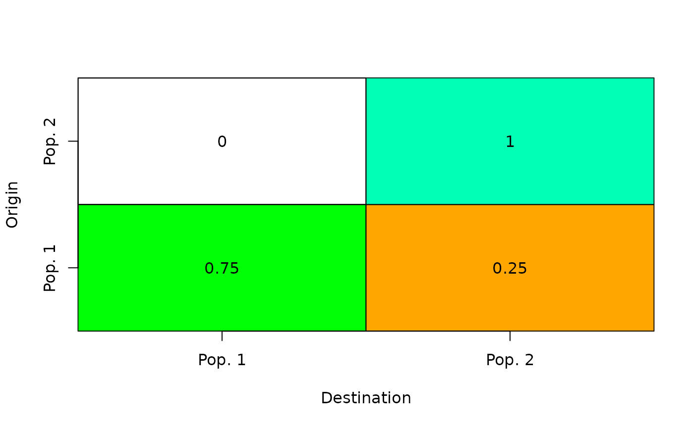
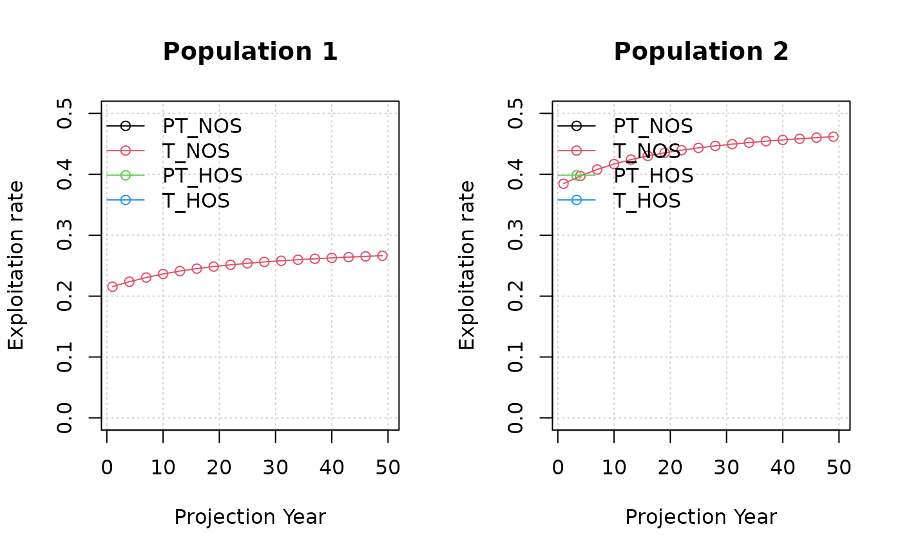
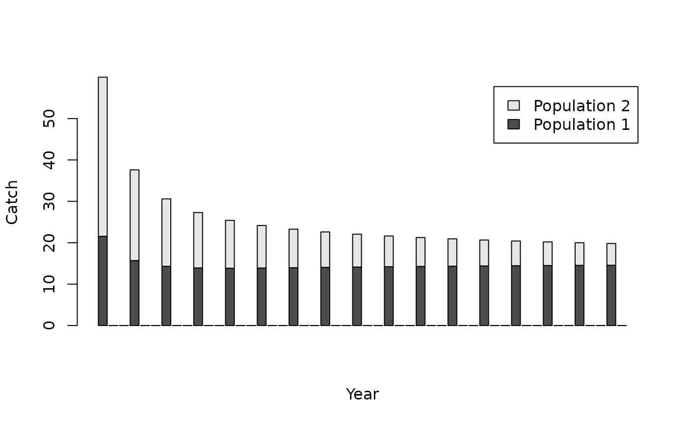
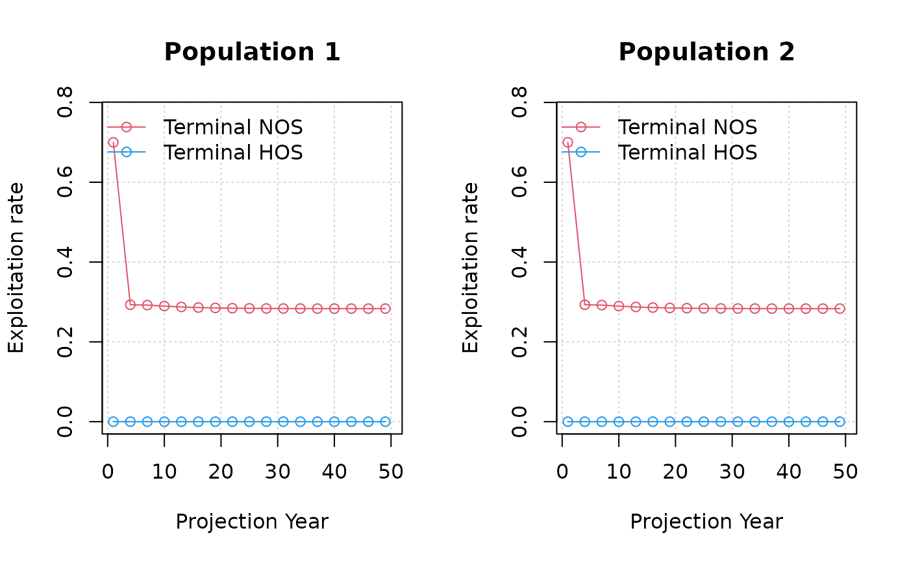
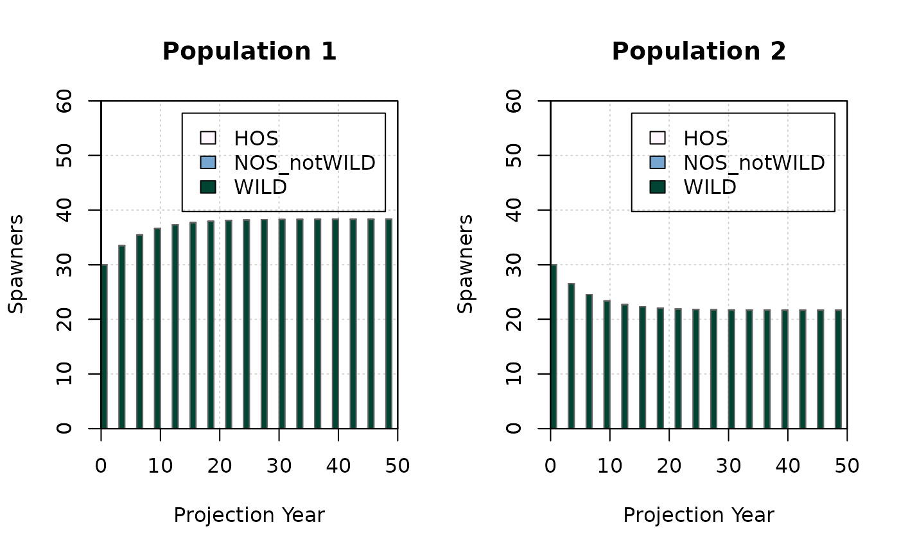
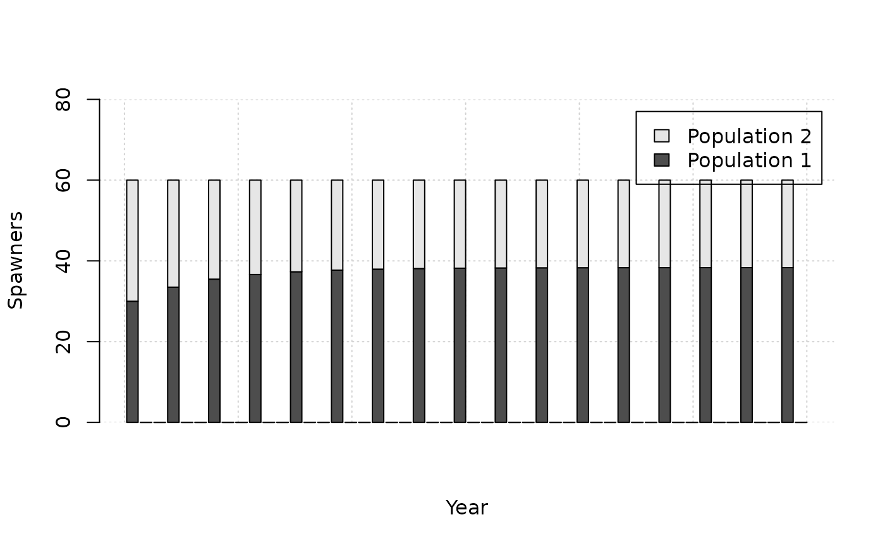
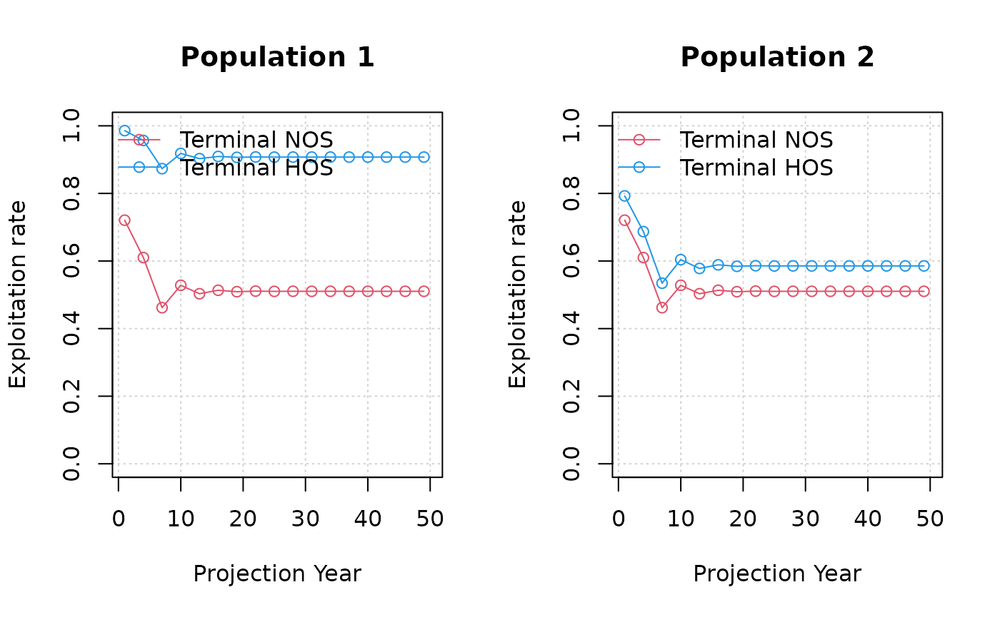
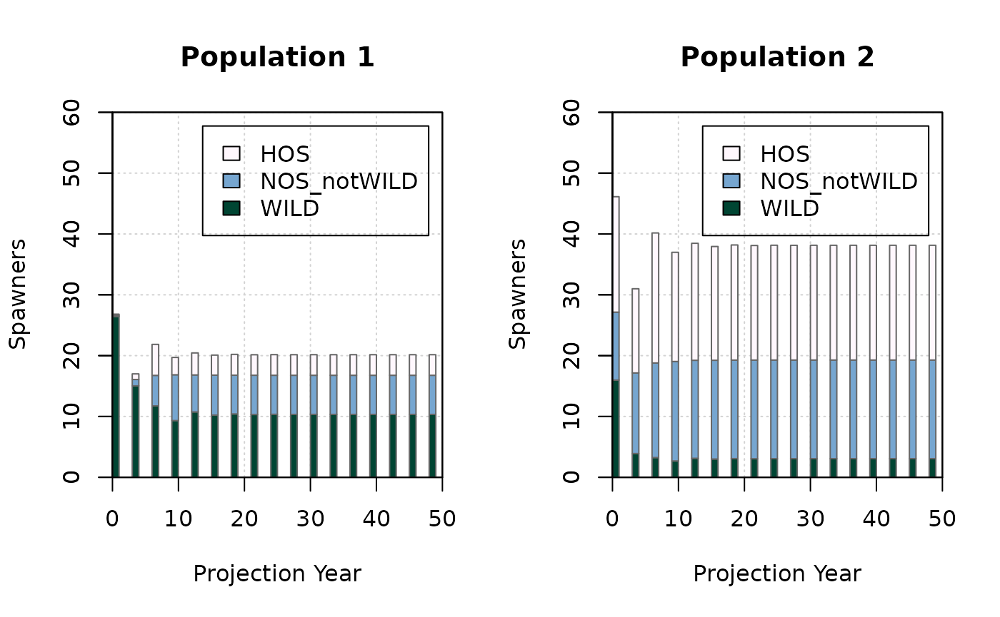

Introduction
salmonMSE has the capability for multi-population modeling, which concurrently project distinct biological units that spawn and reproduce separately.
There may be several use-cases for multi-population models. For example, one wants to evaluate:
The implications of hatchery production in large systems but there may be straying to unenhanced population units. Despite low stray rates, the hatchery influence can be high in small systems due to large hatchery production in an adjacent population. Will certain hatchery production levels compromise the natural characteristics of nearby systems?
The performance of management strategies for fisheries that catch multiple biological units. Smaller or less productive biological units may be choke points and there are objectives to ensure the sustainability of all population units. Will a specified harvest rate ensure the sustainability of a low productivity population unit?
The following code demonstrates the setup for a multi-population model and builds off the first example.
The first case study evaluates the influence of a nearby hatchery (population #1) on a small un-enhanced system (population #2).
The second case study demonstrates the two-population model with mixed-stock fishery.
Case study 1: Straying
Just as in the simple example, we create an object of class
SOM comprising of sub-components that specify the
biological dynamics, as well as hatchery, habitat, and harvest. Here,
those sub-components will be lists corresponding to each population.
Below is the setup for each of the sub-components.
Bio object
We create a list containing Bio objects for each of two populations. Both populations have the same fecundity and marine survival, where the first population has a larger capacity (17,250 vs. 1,000) and 50% higher productivity (3 vs. 2 recruits/spawner) than the second population.
The projection will run three simulations but they are identical among each other.
library(salmonMSE)
ns <- 2 # Two population model
nsim <- 3 # Three simulations
SAR <- 0.01 # Identical SAR for both populations
Bio <- lapply(1:ns, function(s) {
new(
"Bio",
maxage = 3,
p_mature = c(0, 0, 1),
SRrel = "BH",
capacity = ifelse(s == 1, 17250, 1000), # Large population 1, small population 2
kappa = ifelse(s == 1, 3, 2), # Higher productivity in population 1, lower in population 2
Mjuv_NOS = c(0, -log(SAR)),
fec = c(0, 0, 5040),
p_female = 0.49,
s_enroute = 1
)
})
Bio[[1]]@kappa
#> [1] 3
Bio[[2]]@kappa
#> [1] 2Hatchery object
The larger first population has a hatchery program of 10,000 releases per year (quite small since the individual fecundity is 5,040), with no hatchery production for the second population.
For both populations, we want to model their fitness to the natural environment as hatchery fish spawn in the natural environment due to hatchery production in the first population and straying to the second population.
Hatchery <- lapply(1:ns, function(s) {
new(
"Hatchery",
n_yearling = ifelse(s == 1, 10000, 0),
n_subyearling = 0,
s_prespawn = 1,
s_egg_smolt = 0.92,
s_egg_subyearling = 1,
Mjuv_HOS = Bio[[s]]@Mjuv_NOS,
gamma = 0.8,
m = 1, # Mark rate of hatchery releases
pmax_esc = 1, # Maximum proportion of escapement (after en route mortality) that could be used as broodtake
pmax_NOB = 0.7,
ptarget_NOB = 0.51,
phatchery = ifelse(s == 1, 0.8, 0),
premove_HOS = 0,
theta = c(100, 80),
rel_loss = c(0.5, 0.4, 0.1),
fec_brood = c(0, 0, 5040),
fitness_type = c("Ford", "none"),
zbar_start = if (s == 1) c(93.1, 92) else c(100, 92),
fitness_variance = 100,
phenotype_variance = 10,
heritability = 0.5,
fitness_floor = 0.5
)
})Habitat object
No freshwater specific habitat-based survival is modeled here. We
specified density-dependent egg-smolt survival in the Bio
objects.
Habitat <- lapply(1:ns, function(s) {
new(
"Habitat",
use_habitat = FALSE
)
})Harvest object
Here, a terminal harvest rate of 0.203 is specified for both populations.
It is assumed that the preterminal fishery is a mixed-population fishery. Therefore, the harvest rate of the first population applies for all populations.
It is assumed that the terminal fishery is a single-population fishery, and thus, it is possible to control of individual populations.
Currently, salmonMSE assumes equal catchability of all populations by the fishery:
Historical object
The operating model is initialized with a return of 1000 natural-origin and hatchery-origin fish each in the first population, and a return of 100 natural-origin fish (no hatchery return) in the second population.
Stray matrix
Once these objects are set up, they can be combined to create the operating model. The projection will run for 50 years:
SOM <- new(
"SOM",
nsim = nsim, proyears = 50,
Bio, Habitat, Hatchery, Harvest, Historical
)An additional slot in the SOM object specifies the stray
rate of hatchery-origin escapement among populations. Columns in the
square matrix denote origin (donor) population and the rows denote
recipient populations. The diagonal in the matrix is the retention rate
(hatchery-origin escapement that do not stray).
The straying matrix is applied to the escapement (after the terminal fishery operates).
Here, 25 percent of the hatchery fish escapement from the first population will stray to the second population:
#> [,1] [,2]
#> [1,] 0.75 0.25
#> [2,] 0.00 1.00
salmonMSE:::plot_stray(SOM@stray, s_names = paste("Pop.", 1:2))
Stray rates in the multi-population model.
Results
Once the operating model is set up, we can run the projection and generate the Markdown report:
out <- salmonMSE(SOM, silent = TRUE)
#report(out)We can see that the second population (with no hatchery production) rapidly transitions from a natural system to a hatchery-dominated system due to strays from the first population. The population equilibriates after 4 generations:
plot_spawners(out, s = 2, prop = TRUE)The reduction in wild spawners are exclusively from strays as no hatchery-origin juveniles are present in the second population:
max(out@Njuv_HOS[, 2, , ])
#> [1] 0Case study 2: Mixed-stock fishery
Similar to Case study 1, we have Population 1 which is more productive (productivity = 3) than Population 2 (productivity = 2). However, they have equal capacity. We also turn off hatchery production for simplicity.
ns <- 2
nsim <- 3
SAR <- 0.01
Bio <- lapply(1:ns, function(s) {
new(
"Bio",
maxage = 3,
p_mature = c(0, 0, 1),
SRrel = "BH",
capacity = 1e4,
kappa = ifelse(s == 1, 3, 2),
Mjuv_NOS = c(0, -log(SAR)),
fec = c(0, 0, 5040),
p_female = 0.49,
s_enroute = 1
)
})
Habitat <- lapply(1:ns, function(s) {
new(
"Habitat",
use_habitat = FALSE
)
})
Hatchery <- lapply(1:ns, function(s) {
new(
"Hatchery",
n_yearling = 0,
n_subyearling = 0
)
})
Historical <- lapply(1:ns, function(s) {
new(
"Historical",
InitNjuv_NOS = 100,
InitNjuv_HOS = 0
)
})
Harvest_equalvul <- lapply(1:ns, function(s) {
new(
"Harvest",
vulPT = c(0, 0, 0),
vulT = c(1, 1, 1)
)
})
SOM <- new(
"SOM",
nsim = nsim, proyears = 50,
Bio, Habitat, Hatchery, Harvest_equalvul, Historical
)In the above code chunk, the Harvest objects specify
equal vulnerability between the two populations (vulT is 1
for both). Note that we don’t specify a harvest rate within the
Harvest objects, as they are intended for fisheries which
act independently among populations.
The harvest rate for a fishery that operates on both populations
simultaneously is specified in SOM@UPT_complex and
SOM@UT_complex.
For example, set a terminal harvest rate to 30% as follows:
SOM@UT_complex <- 0.3This example is trivial as both populations will experience an exploitation rate of 30%.
A multi-population model is more relevant when:
- Populations have differing vulnerability to the fishery
- Harvest rate is dynamic because it is a function of a control rule
- Mark-selective fishing exerts different exploitation rates by population depending on the mark rate and hatchery production levels
Example A: Differing vulnerability
Populations can have different vulnerability to the mixed-stock fishery. For example, the spatial footprint of the fishery leads to more frequent encounters of a particular population.
Here, we adjust the vulnerability so that one unit of fishing effort leads to twice the encounters of Population 2 than of 1:
Harvest_unequalvul <- lapply(1:ns, function(s) {
new(
"Harvest",
vulPT = c(0, 0, 0),
vulT = if (s == 1) c(0.5, 0.5, 0.5) else c(1, 1, 1)
)
})
SOM_A <- new(
"SOM",
nsim = nsim, proyears = 50,
Bio, Habitat, Hatchery, Harvest_unequalvul, Historical
)
SOM_A@UT_complex <- 0.3
SMSE_A <- salmonMSE(SOM_A)
#> Preterminal fishery will operate on individual populations
#> Terminal fishery will operate on full complex (all populations)
#> Checking parameters for population 1
#> Checking parameters for population 2If we look at the ratio of total catch and total returns, we achieve an aggregate harvest rate of 30%, as specified above:
Catch <- apply(SMSE_A@KT_NOS, c(1, 4), sum) # sum over populations and ages
Return <- apply(SMSE_A@Return_NOS, c(1, 4), sum)
U <- apply(Catch/Return, 2, median)
plot(U, type = "o", ylim = c(0, 0.5), xlab = "Year", ylab = "Aggregate harvest rate")Due to differing vulnerability and return sizes, the exploitation rate on Population 2 is higher:
par(mfcol = c(1, 2))
plot_fishery(SMSE_A, s = 1, type = "exploit", main = "Population 1", ylim = c(0, 0.5))
plot_fishery(SMSE_A, s = 2, type = "exploit", main = "Population 2", ylim = c(0, 0.5))
Here is the catch composition:
Catch_comp <- apply(SMSE_A@KT_NOS, c(1, 2, 4), sum) |> apply(2:3, median)
barplot(Catch_comp, xlab = "Year", ylab = "Catch", legend.text = c("Population 1", "Population 2"))
Example B: Aggregate control rule
For mixed-stock fisheries, we can simulate harvest control rules that operate on the aggregate and then evaluate outcomes by individual population. A custom function is used such that the harvest rate is responsive to the return size.
In this example, the control rule allows for catch of all fish in excess of the escapement goal of 60:
SOM_B <- new(
"SOM",
nsim = nsim, proyears = 50,
Bio, Habitat, Hatchery, Harvest_equalvul, Historical
)
SOM_B@UT_complex <- function(NO, HO, m) {
Return <- sum(NO, HO)
Catch <- max(0, Return - 60)
U <- Catch/Return
U[Return == 0] <- 0
return(U)
}
SMSE_B <- salmonMSE(SOM_B)
#> Preterminal fishery will operate on individual populations
#> Terminal fishery will operate on full complex (all populations)
#> Checking parameters for population 1
#> Checking parameters for population 2The control rule equilibriates after several generations:
par(mfcol = c(1, 2))
plot_fishery(SMSE_B, s = 1, type = "exploit", main = "Population 1")
plot_fishery(SMSE_B, s = 2, type = "exploit", main = "Population 2")
Both populations experience the same exploitation rate, but Population 2 is smaller due to lower productivity:
par(mfcol = c(1, 2))
plot_spawners(SMSE_B, s = 1, prop = FALSE, main = "Population 1", ylim = c(0, 60))
plot_spawners(SMSE_B, s = 2, prop = FALSE, main = "Population 2", ylim = c(0, 60))
In aggregate, the escapement target of 60 is met:
Spawner_comp <- apply(SMSE_B@NOS, c(1, 2, 4), sum) |> apply(2:3, median)
barplot(
Spawner_comp, xlab = "Year", ylab = "Spawners",
legend.text = c("Population 1", "Population 2"), ylim = c(0, 80),
panel.first = grid()
)
Example C: Mark-selective fishing
A mark-selective, mixed-stock fishery can have different impacts depending on the hatchery management of each underlying population.
The example code demonstrates a fishery for two populations that have equal productivity, equal hatchery production (target of 5,000 releases per year), but different mark rates (100% for population 1 and 25% for population 2).
The harvest rate is 30%, defined as the ratio of kept catch (marked
fish) to the total return (all fish).
With mark-selective fishing, the fishery encounters and releases
un-marked fish until the harvest rate is met. The release mortality of
un-marked fish is 30 percent.
ns <- 2
nsim <- 3
SAR <- 0.01
Bio <- lapply(1:ns, function(s) {
new(
"Bio",
maxage = 3,
p_mature = c(0, 0, 1),
SRrel = "BH",
capacity = 1e4,
kappa = ifelse(s == 1, 3, 2),
Mjuv_NOS = c(0, -log(SAR)),
fec = c(0, 0, 5040),
p_female = 0.49,
s_enroute = 1
)
})
Habitat <- lapply(1:ns, function(s) {
new(
"Habitat",
use_habitat = FALSE
)
})
Hatchery1000 <- lapply(1:ns, function(s) {
new(
"Hatchery",
n_yearling = 0,
n_subyearling = 5000,
s_prespawn = 1,
s_egg_subyearling = 0.8,
Mjuv_HOS = Bio[[s]]@Mjuv_NOS,
gamma = 0.8,
m = ifelse(s == 1, 1, 0.10), # Mark rate
pmax_esc = 1,
pmax_NOB = 0.7,
ptarget_NOB = 0.51,
phatchery = NA_real_
)
})
Historical <- lapply(1:ns, function(s) {
new(
"Historical",
InitNjuv_NOS = 100,
InitNjuv_HOS = 100
)
})
Harvest_equalvul <- lapply(1:ns, function(s) {
new(
"Harvest",
vulPT = c(0, 0, 0),
vulT = c(1, 1, 1),
release_mort = rep(0.3, 2) # Release mortality
)
})
SOM <- new(
"SOM",
nsim = nsim, proyears = 50,
Bio, Habitat, Hatchery1000, Harvest_equalvul, Historical
)
SOM@UT_complex <- 0.3
SOM@MSF_T_complex <- TRUE # Turns on mark-selective fishing of aggregate fishery
SMSE_C <- salmonMSE(SOM)
#> Preterminal fishery will operate on individual populations
#> Terminal fishery will operate on full complex (all populations)
#> Checking parameters for population 1
#> Checking parameters for population 2The simulation confirms that the 30% harvest rate can be achieved:
Catch <- apply(SMSE_C@KT_NOS + SMSE_C@KT_HOS, c(1, 4), sum) # sum over populations and ages
Return <- apply(SMSE_C@Return_NOS + SMSE_C@Return_HOS, c(1, 4), sum)
U <- apply(Catch/Return, 2, median)
plot(U, type = "o", ylim = c(0, 0.5), xlab = "Year", ylab = "Aggregate harvest rate")Exploitation rates, calculated from kept catch and dead discards, differ by population and origin. Population 1 with the higher mark rate has higher exploitation rates on hatchery-origin fish than in Population 2. Both populations have similar exploitation rates on natural-origin fish due to catch and release:
par(mfcol = c(1, 2))
plot_fishery(SMSE_C, s = 1, type = "exploit", main = "Population 1", ylim = c(0, 1))
plot_fishery(SMSE_C, s = 2, type = "exploit", main = "Population 2", ylim = c(0, 1))
With the higher mark rate and exploitation rate on hatchery-origin fish, the spawners of Population 1 are more likely to be natural-origin than in Population 2:
par(mfcol = c(1, 2))
plot_spawners(SMSE_C, s = 1, main = "Population 1", prop = FALSE, ylim = c(0, 60))
plot_spawners(SMSE_C, s = 2, main = "Population 2", prop = FALSE, ylim = c(0, 60))